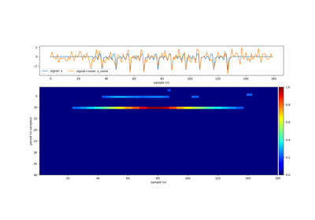
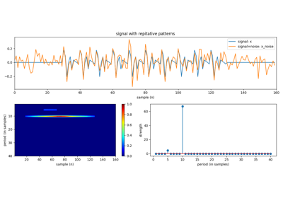

Note
Go to the end to download the full example code or to run this example in your browser via JupyterLite or Binder
Ramanujan Dictionary - with sparse penalty¶
import numpy as np
import matplotlib.pyplot as plt
import sys, scipy
from scipy import linalg as LA
import spkit as sp
print('spkit version :', sp.__version__)
# # Ramanujan Dictionary - with sparse penalty
spkit version : 0.0.9.7
Signal with 3-periods and SNR=10¶
#np.random.seed(None)
periods = [3,7,11]
signal_length = 200
SNR = 10
x = np.zeros(signal_length)
for period in periods:
x_temp = np.random.randn(period)
x_temp = np.tile(x_temp,int(np.ceil(signal_length/period)))
x_temp = x_temp[:signal_length]
x_temp /= LA.norm(x_temp,2)
x += x_temp
x_noise = sp.add_noise(x,snr_db=SNR)
Pmax = 80
# L1 regularisation with sparse penalty
period_est_l1_1l = sp.regularised_period_estimation(x_noise,Pmax=Pmax,method='Ramanujan',lambd=1, L=1, cvxsol=True)
# L1 regularisation with no penalty
period_est_l1_0l = sp.regularised_period_estimation(x_noise,Pmax=Pmax,method='Ramanujan',lambd=0, L=1, cvxsol=True)
# L2 regularisation with sparse penalty
period_est_l2_1l = sp.regularised_period_estimation(x_noise,Pmax=Pmax,method='Ramanujan',lambd=1, L=2, cvxsol=False)
# No regularisation no penalty
y = sp.ramanujan_filter(x_noise,Pmax = Pmax, Rcq=10, Rav=2, Th=0.2)
period_est_rbf = np.sum(y,0)
print('Top 10 periods : ')
print(' - using L1 regularisation with sparse penalty : ',np.argsort(period_est_l1_1l)[::-1][:10]+1)
print(' - using L1 regularisation with no penalty : ',np.argsort(period_est_l1_0l)[::-1][:10]+1)
print(' - using L2 regularisation with sparse penalty : ',np.argsort(period_est_l2_1l)[::-1][:10]+1)
print(' - using no regularisation no penalty : ',np.argsort(period_est_rbf)[::-1][:10]+1)
plt.figure(figsize=(12,12))
plt.subplot(411)
plt.plot(x,label='signal: x')
plt.plot(x_noise, label='signal+noise: x_noise')
#plt.text(5,1.01*np.max(x_noise) ,f'signal with repitative patterns')
plt.xlim([0,len(x)])
plt.xlabel('sample (n)')
plt.legend(bbox_to_anchor=(1,1))
plt.subplot(423)
XF = np.abs(np.fft.fft(x_noise))[:1+len(x_noise)//2]
fq = np.arange(len(XF))/(len(XF)-1)
plt.stem(fq,XF)
plt.title('DFT')
plt.ylabel('| X |')
plt.xlabel(r'frequency $\times$ ($\omega$/2) ~ 1/period ')
plt.subplot(424)
plt.stem(np.arange(len(period_est_l1_1l))+1,period_est_l1_1l)
plt.xlabel('period (in samples)')
plt.ylabel('strength')
plt.title('L1 + sparse penality')
plt.subplot(425)
plt.stem(np.arange(len(period_est_l2_1l))+1,period_est_l2_1l)
plt.xlabel('period (in samples)')
plt.ylabel('strength')
plt.title('L2 + sparse penalty')
plt.subplot(426)
plt.stem(np.arange(len(period_est_l1_0l))+1,period_est_l1_0l)
plt.xlabel('period (in samples)')
plt.ylabel('strength')
plt.title('L1 without penality')
plt.subplot(427)
im = plt.imshow(y.T,aspect='auto',cmap='jet',extent=[1,len(x_noise),Pmax,1])
plt.colorbar(im)
plt.xlabel('sample (n)')
plt.ylabel('period (in samples)')
plt.subplot(428)
plt.stem(np.arange(1,y.shape[1]+1),period_est_rbf)
plt.xlabel('period (in samples)')
plt.ylabel('strength')
plt.tight_layout()
plt.show()
Top 10 periods :
- using L1 regularisation with sparse penalty : [ 3 7 6 2 10 11 18 13 43 19]
- using L1 regularisation with no penalty : [ 3 80 73 71 58 62 47 45 79 55]
- using L2 regularisation with sparse penalty : [ 3 7 2 11 10 6 13 14 8 18]
- using no regularisation no penalty : [11 3 7 36 30 58 52 54 80 69]
Total running time of the script: (0 minutes 3.829 seconds)
Related examples

Ramanujan Filter Banks Example
Ramanujan Filter Banks Example

Ramanujan Filter Banks - Demos
Ramanujan Filter Banks - Demos